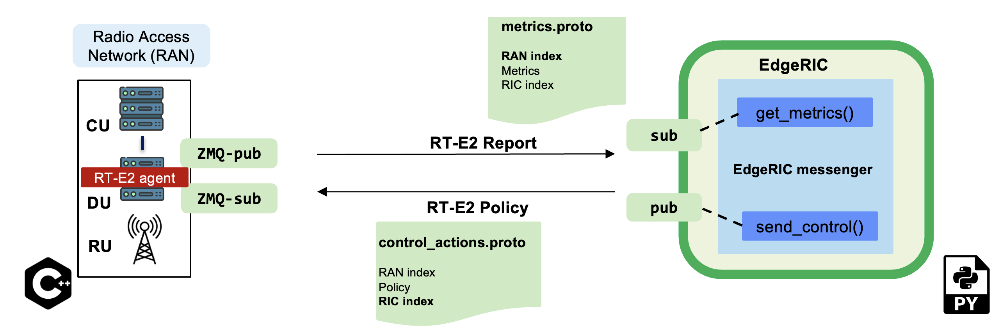
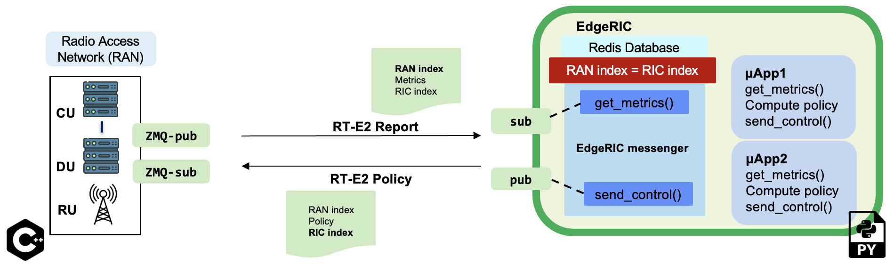

RT-E2 interface (Real time E2 interface)¶
{kind=link}

- RAN and EdgeRIC communication framework
EdgeRIC adopts a low overhead messaging framework [RT-E2]
It is built on top of the ZMQ message passing library
- RT-E2 message format
The RT-E2 messaging framework utilizes Protocol Buffers (protobuf) for defining the message schemas. Protobuf provides a platform-neutral and language-neutral way to serialize structured data. The schema is compiled into a compact binary format, which allows for efficient transmission and parsing of messages.
- RT-E2 RAN agent
The
rtagentclass is responsible for gathering the KPIs produced every TTI and receiving the corresponding control actionsrtagent::send_to_er()function is called at the end of the TTI to pubish the collcted metrics to EdgeRICrtagent::receive_from_er()function is called at the beginning of every TTI to receive the control actions from EdgeRIC and distribute it to the right network function to be utilized at that TTI
- EdgeRIC messenger
This is responsible for subscribing to the RAN metrics, which is utilized by the various μApps, and publishing the control actions.
get_metrics_multi()subscribes to the RAN every TTI and receives the network metrics, schema defined in``metrics.proto``send_control()publishes the control action, schema defined incontrol_actions.pb
- TTI level synchronization
Our system is synchronized to the TTI-level clock tick from the RAN stack. The RAN stack uses a TTI counter, referred to as RAN index. It is included in all RT-E2 messages to EdgeRIC. EdgeRIC too maintains its own counter, called RIC index which increments by 1 every time it sends out its action. Our system is equipped with a default mechanism to ensure that EdgeRIC is slaved to the current RAN index or TTI by ensuring that the RIC index is always equal to the RAN index.
RT-E2 Report Message¶
The EdgeRIC messenger agent subscribes to the current RAN TTI to receive the realtime metrics
The RT-E2 report message includes per-UE key performance indicators (KPIs) received from the RAN. Each UE is identified by its unique RNTI (Radio Network Temporary Identifier) along with its corresponding KPIs.
Structure of the message:
ue_data followed by RIC ID and RAN ID.
Message Details:
ue_data: Dictionary containing per-UE metrics. Each entry is keyed by the RNTI of the UE and contains the following KPIs:
cqi: Channel Quality Indicator, reflecting the downlink channel quality.dl_buffer: Amount of backlog data waiting to be sent to the UE in the downlink.snr: Signal-to-Noise Ratio in the uplink, indicating the quality of the uplink signal.ul_buffer: Data that is waiting to be sent in the uplink.dl_tbs: The current downlink bytes scheduled for the UE.tx_bytes: The current downlink bitrate for the UE.rx_bytes: The current uplink bitrate for the UE.ul_tbs: The current uplink bytes scheduled for the UE.
RIC ID: This is the RIC index
RAN ID: This is the RAN index or the TTI counter
Example Data Structure:
ue_data = {
1001: { # Example RNTI
'cqi': 15, # Downlink Channel Quality Indicator
'dl_buffer': 500, # Downlink Backlog Buffer in Bytes
'snr': 20.5, # Uplink SNR in dB
'ul_buffer': 250, # Uplink Pending Data in Bytes
'dl_tbs' : 300, # The current downlink bytes scheduled for the UE.
'ul_tbs' : 320, # The current uplink bytes scheduled for the UE.
'tx_bytes': 100 # Downlink bitrate in Mbps
'rx_bytes': 100 # Uplink bitrate in Mbps
}
}
# RIC_ID = 1
RAN_ID = 101
This structured message is critical for performance management and optimization of network resources in real-time applications.
This schema is defined as a protobuf message metrics.proto
syntax = "proto3";
message UeMetrics {
uint32 rnti = 1;
uint32 cqi = 2;
uint32 backlog = 3;
float snr = 4;
uint32 pending_data = 5;
float tx_bytes = 6;
float rx_bytes = 7;
}
message Metrics {
uint32 tti_cnt = 1;
repeated UeMetrics ue_metrics = 2;
uint32 ric_cnt = 3;
}
RT-E2 Policy Message¶
Structure of the message:
μApp1-control-message, RIC ID, RAN ID.
μApp2-control-message, RIC ID, RAN ID.
- Example message format:
μApp1-control-message—>UE1 RNTI,Action for UE1,UE2 RNTI,Action for UE2, …
EdgeRIC messenger then publishes the control actions to the RAN
This schema is defined as a protobuf message control_actions.proto
syntax = "proto3";
message SchedulingWeights {
uint32 ran_index = 1;
repeated float weights = 2;
} # schema for sending the scheduling decision
message Blanking {
uint32 ran_index = 1;
int32 a = 2;
int32 b = 3;
} # schema for modifying the available PRBs in UL
REDIS database¶
EdgeRIC maintains a Redis database to receive learned models/ policy updates from cloud-based systems.
The database is also used to manage the lifecycle of μApps, which includes:
Tracking the number of microApps running: This allows EdgeRIC to allocate resources efficiently and ensure optimal operation of all active microApps.
Configuration based on user input: EdgeRIC configures microApps according to user-defined parameters. This flexibility allows users to tailor app behavior to specific needs.
Dynamic updating: EdgeRIC can update microApps on-the-fly based on new user inputs or changes in the operating environment. This feature ensures that microApps can adapt to evolving requirements without needing a system restart.
μApps - EdgeRIC microservices¶
{kind=link}

Each μApp{i} receives metrics by subscribing to the edgeric agent’s get_metrics_multi() function. Based on these metrics, it computes a policy for the specific network function and sends the decisions to edgerics agent’s send_control_μApp_i() function.
how to write μApps?¶
#### This is an example of a Downlink RBG scheduling μApp
import gym
import pandas as pd
sys.path.append(os.path.abspath(os.path.join(os.path.dirname(__file__), '..')))
import math
import time
from utils import *
import torch
import redis
from edgeric_messenger import * #import edgeric agent
def compute_policy():
flag = False # to be deleted
ue_data = get_metrics_multi() #### subscribe to RAN's RT-E2 agent via EdgeRIC messenger to receive metrics
numues = len(ue_data)
weights = np.zeros(numues * 2)
RNTIs = list(ue_data.keys())
for i in range(numues):
# Store RNTI and corresponding weight
weights[i*2+0] = RNTIs[i]
weights[i*2+1] = 1/numues
send_control_μApp_1(weights,flag) #### send the scheduling control action to the EdgeRIC messenger
value_algo = "Fixed Weights"
if __name__ == "__main__":
while True:
compute_policy()